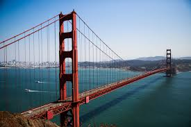

Flexbox Blog-Card

New York
AUG1
102
New York, often called New York City[b] or simply NYC, is the most populous city in the United States, located at the southern tip of New York State on one of the world's largest natural harbors.

San Francisco
AUG1
102
San Francisco,[24] officially the City and County of San Francisco, is a commercial, financial, and cultural center in Northern California. With a population of 808,437 residents as of 2022,